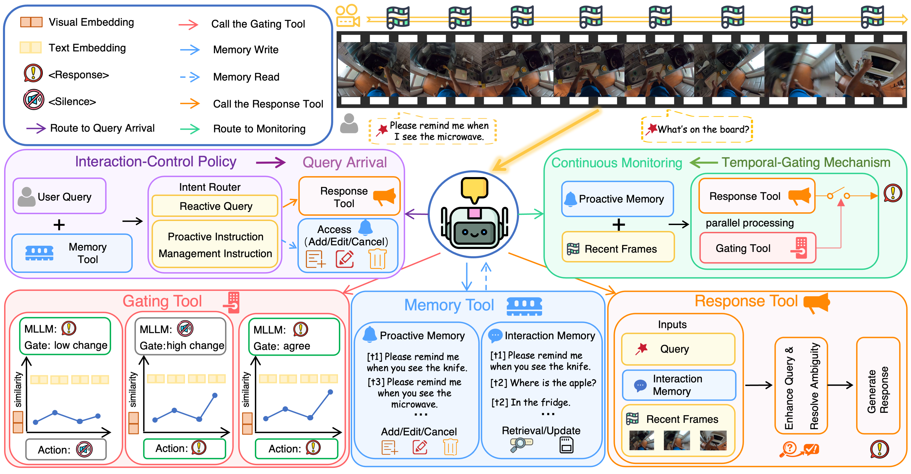

We introduce the first benchmark for evaluating interactive proactive intelligence of MLLMs under streaming video settings, covering proactive monitoring, proactive task management, and interleaved reactive–proactive requests.
From reactive to proactive
From answering to proactively responding.
Real assistants must reason continuously, support multi-turn interaction, act at the right moment, and adapt as people change their minds.
Recent MLLMs excel at reactive question answering, yet real-world streaming assistants need to proactively reason over continuous visual inputs, respond at the right moment, and coordinate with users across multi-turn interactions. IPIBench evaluates this shift in dynamic video settings where users can add, modify, or cancel proactive requests while interleaving reactive questions.
We evaluate representative proprietary, open-source, and online streaming models, revealing unstable proactive triggering and weak multi-turn interaction coordination.
We propose a training-free agentic framework with an interaction-control policy and temporal-gating mechanism to improve triggering stability and multi-turn coordination.
IPIBench
Evaluating Interactive Proactive Intelligence of MLLMs
Three task families capture the shift from one-shot alerts to stateful, mixed-initiative interaction.

Demo
See IPIBench and IPI-Agent in motion.
A 3-minute walkthrough of our IPIBench and our IPI-Agent framework.
Dataset at a glance
Diverse task types. Broad video sources.
IPIBench spans 1,831 videos and 3,738 QA instances across rich task types and broad egocentric/exocentric sources.
Task distribution
Share of all QA instances
3,738QA instances
Proactive Monitoring46.71%
Task Management25.07%
Interleaved Requests28.22%
Video duration
Durations range from short clips measured in seconds to long videos exceeding five minutes.
Video sources
Complementary first- and third-person viewpoints
42.65%57.35%
Egocentric781
Exocentric1,050
394Daily indoor
254Cooking
201Vlogs
170Handicraft
162Household chores
160Failure events
140Tutorials
115Sports
108Social & leisure
87Driving
40Movies
IPI-Agent
Always attentive, never intrusive.
A training-free agentic framework that turns existing offline MLLMs into more stable, stateful streaming assistants.
01
Interaction-control policy
Routes reactive queries and manages add, edit, and cancel instructions with explicit memory.
02
Temporal-gating mechanism
Combines recent frames with proactive memory to decide when to respond and when to stay silent.
03
Tool-based modularity
Separates gating, memory, and response generation for plug-and-play use across base MLLMs.

Leaderboard
Current models are still far from human.
Scores (%) across all nine IPIBench sub-categories and three task-family averages.
best non-human score
| Model | Proactive Monitoring | Proactive Task Management | Interleaved Reactive–Proactive | |||||||||
|---|---|---|---|---|---|---|---|---|---|---|---|---|
| Timing | Under. | Repeat. | Avg. | Cancel | Modify | Multi | Avg. | R2P | RuP | RaP | Avg. | |
| Human Level | 98.00 | 94.00 | 92.00 | 94.67 | 98.00 | 92.00 | 98.00 | 96.00 | 96.00 | 96.00 | 98.00 | 96.67 |
| Proprietary Models · Offline | ||||||||||||
| Gemini 3 Pro | 43.49 | 24.90 | 18.40 | 28.93 | 19.44 | 21.84 | 19.39 | 20.22 | 24.76 | 17.68 | 26.69 | 23.04 |
| Gemini 2.5 Pro | 45.36 | 25.26 | 13.21 | 27.94 | 24.54 | 20.81 | 16.78 | 20.71 | 21.17 | 17.54 | 28.24 | 22.32 |
| GPT-5.4 | 54.64 | 23.52 | 8.96 | 29.04 | 38.43 | 24.50 | 7.57 | 23.50 | 27.04 | 15.06 | 29.28 | 23.79 |
| GPT-4o | 50.59 | 25.99 | 13.68 | 30.09 | 11.57 | 31.88 | 14.18 | 19.21 | 27.04 | 17.68 | 26.17 | 23.63 |
| Open-source Models · Offline | ||||||||||||
| LLaVA-OneVision-7B | 12.14 | 8.66 | 0.00 | 6.93 | 1.39 | 1.01 | 0.47 | 0.96 | 3.91 | 0.00 | 3.89 | 2.60 |
| InternVL3-8B | 32.51 | 22.31 | 3.77 | 19.53 | 6.94 | 6.04 | 3.55 | 5.51 | 7.17 | 0.00 | 9.33 | 5.50 |
| Qwen3-VL-8B | 43.12 | 24.51 | 4.25 | 23.96 | 1.39 | 17.45 | 9.22 | 9.35 | 24.43 | 19.75 | 23.05 | 22.41 |
| Qwen3.5-Plus | 35.25 | 24.35 | 7.89 | 22.50 | 12.96 | 31.54 | 10.87 | 18.46 | 32.25 | 22.01 | 30.57 | 28.28 |
| GLM-4.6V | 50.43 | 27.59 | 10.85 | 29.62 | 15.28 | 24.16 | 9.69 | 16.38 | 22.15 | 6.77 | 39.37 | 22.76 |
| Open-source Models · Online | ||||||||||||
| VideoLLM-online-8B | 14.63 | 0.14 | 1.82 | 5.53 | 7.87 | 1.68 | 6.62 | 5.39 | 0.00 | 1.10 | 1.55 | 0.88 |
| Dispider | 18.72 | 0.65 | 1.82 | 7.06 | – | – | – | – | – | – | – | – |
| Flash-VStream-7B | 5.91 | 0.00 | 0.00 | 1.97 | 2.31 | 0.00 | 0.00 | 0.77 | 0.00 | 0.00 | 0.78 | 0.26 |
Higher is better. Under. = Understanding; Repeat. = Repeated Proactiveness.Scroll horizontally to view all metrics →
IPI-Agent results
One framework, consistent gains.
IPI-Agent improves four representative MLLMs without additional training. Green values show absolute gains over each base model.
Gemini 3 Pro+18.50Task Management Avg.
GPT-5.4+5.87Task Management Avg.
Qwen3.5-Plus+18.72Task Management Avg.
Qwen3-VL-8B+17.39Task Management Avg.
| IPI-Agent Base | Proactive Monitoring | Proactive Task Management | Interleaved Reactive–Proactive | |||||||||
|---|---|---|---|---|---|---|---|---|---|---|---|---|
| Timing | Under. | Repeat. | Avg. | Cancel | Modify | Multi | Avg. | R2P | RuP | RaP | Avg. | |
| Gemini 3 Pro | 56.27+12.78 | 35.67+10.77 | 28.30+9.90 | 40.08+11.15 | 51.85+32.41 | 35.23+13.39 | 29.08+9.69 | 38.72+18.50 | 30.62+5.86 | 22.38+4.70 | 29.53+2.84 | 27.51+4.47 |
| GPT-5.4 | 57.20+2.56 | 24.30+0.78 | 10.85+1.89 | 30.78+1.74 | 48.61+10.18 | 24.83+0.33 | 14.66+7.09 | 29.37+5.87 | 28.01+0.97 | 19.34+4.28 | 33.42+4.14 | 26.92+3.13 |
| Qwen3.5-Plus | 52.80+17.55 | 33.18+8.83 | 18.42+10.53 | 34.80+12.30 | 52.78+39.82 | 33.22+1.68 | 25.53+14.66 | 37.18+18.72 | 32.25+0.00 | 22.63+0.62 | 35.95+5.38 | 30.28+2.00 |
| Qwen3-VL-8B | 46.62+3.50 | 25.37+0.86 | 15.09+10.84 | 29.03+5.07 | 44.91+43.52 | 23.49+6.04 | 11.82+2.60 | 26.74+17.39 | 27.36+2.93 | 23.62+3.87 | 30.57+7.52 | 27.18+4.77 |
Score on top; absolute gain over the original base MLLM below.No additional training required.
Ablation study
Both components matter.
Removing either interaction control or temporal gating degrades performance, using Qwen3-VL-8B as the base model.
| Variant / Δ from full | Proactive Monitoring | Proactive Task Management | Interleaved Reactive–Proactive | |||||||||
|---|---|---|---|---|---|---|---|---|---|---|---|---|
| Timing | Under. | Repeat. | Avg. | Cancel | Modify | Multi | Avg. | R2P | RuP | RaP | Avg. | |
| Full IPI-Agent | 46.62 | 25.37 | 15.09 | 29.03 | 44.91 | 23.49 | 11.82 | 26.74 | 27.36 | 23.62 | 30.57 | 27.18 |
| w/o Interaction Control | 0.00 | 0.00 | 0.00 | 0.00 | −40.95 | −4.70 | −0.24 | −15.54 | −1.81 | −0.55 | −3.11 | −1.82 |
| w/o Temporal Gating | −3.50 | −0.86 | −10.84 | −5.07 | −6.95 | −5.37 | −1.65 | −4.66 | −0.32 | −2.21 | −3.63 | −2.05 |
Citation
Build on IPIBench.
If you find this work useful, please cite our paper.
@article{li2026ipibench,
title={IPIBench: Evaluating Interactive Proactive Intelligence of MLLMs under Continuous Streams},
author={Li, Jinzhao and Chen, Yinuo and Song, Wenxuan and Lei, Yijia and Zhang, Yichi and Yan, Honglei and Pan, Panwang and Liu, Miao},
journal={arXiv preprint arXiv:2605.27074},
year={2026}
}